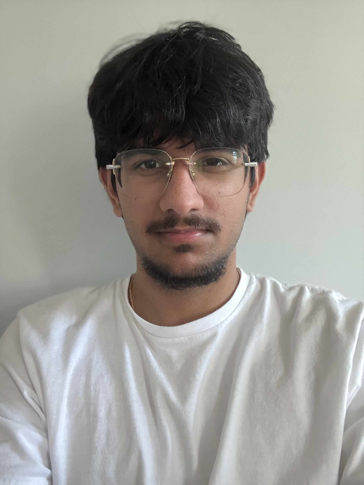

Gurdit Virk
gurditvirk0@gmail.com
 Indeed Link
Indeed Link
 GitHub Link
Discord Link
GitHub Link
Discord Link
Sections:
Part 1: Burnaby
I was born on October 22nd, 2004 in Burnaby, BC. I have two brothers, where I am
the middle child. My younger brother was born in 2006, while my older brother was born
in 2001. I have lived in Burnaby for 17 years. While in Burnaby,
I went to Elementary and Highschool where I have made friends that I am still close with. Some of my favourite
memories were hanging out with friends and family. During the summer, we often would go to Cultus Lake and PNE.
My early life can be summed up by spending time with my brothers,
cousins, and friends. It was fun for the most part, and I made some great memories.

Part 2: Calgary
After living in Burnaby for 17 years, I moved to Calgary and lived there for 2 years.
I left to study Computer Science at the University of Calgary. During my time in Calgary,
I got to explore Alberta a bit. I visited Banff and Edmonton. In Edmonton, I visited West Edmonton
Mall with my family. I also visited Banff twice and got to see Lake Louise. It was fun visiting
both Edmonton and Banff. Overall, I really enjoyed how peaceful Alberta was and had fun
during the 2 years I stayed there.

Part 3: Surrey
After living in Calgary for 2 years, I got accepted into SFU. I officially moved
back to BC on August 19th, 2024, but this time I am living in Surrey. Once I came back, I got to
reconnect with my friends that I made here, as well as my cousins. I missed BC while I was
in Calgary and it is good to be back with all of my friends, family, and extended family.